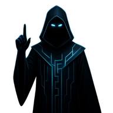

THE STRATEGIC VAULT
Systems. Probability. Strategy.
INITIALIZE ACCESS
FULLSCREEN
The Strategic Vault
Artifacts Recovered
Dice of Probability
Shield of Risk Pooling
Core of Equilibrium
The Adjudicator

💾 Progress Autosaved
 Dice of Probability
Dice of Probability
 Shield of Risk Pooling
Shield of Risk Pooling